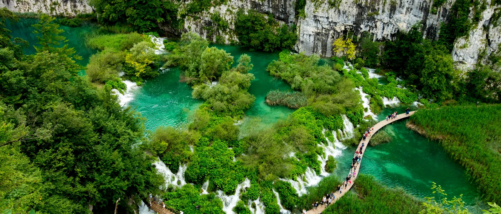

Kroatiens Mest Kända Nationalpark
Nationalparken Plitvicesjöarna är Kroatiens äldsta och största nationalpark, och ett UNESCO-världsarv sedan 1979. Sexton terrasserade sjöar, från djupblått till klart turkost, forsar ner i varandra genom en rad vattenfall, alla förbundna av trästigar och skogsleder som slingrar sig genom bok- och granskog. Det är en heldagsutflykt från Split — ungefär två och en halv timmes körning per sträcka — vilket är just varför de flesta besökare föredrar en privat dagsutflykt framför att ordna det på egen hand: en tidig avfärd slår bussgrupperna till de övre sjöarna, och en chaufför som känner vägen gör att den långa resan känns bekväm snarare än tröttsam. Eftersom parken ligger inne i landet, långt från kusten, är detta också en av få dagsutflykter från Split som visar en helt annan sida av Kroatien — tät skog, karstberggrund och vatten åt alla håll — ett genuint miljöombyte från den dalmatiska kusten.
Detta Ingår
- Privat fordon endast för din grupp — ingen delad shuttle
- Engelsktalande chaufför under hela dagen
- Upphämtning och avlämning vid hotell eller boende i Split
- Allt bränsle, vägavgifter och parkering vid parken
- Flexibel tid i parken — din chaufför väntar
- Vatten på flaska för resan
Ingår ej: Inträdesbiljetter till Nationalparken Plitvicesjöarna, som köps på plats eller i förväg direkt hos parken (priserna varierar med säsong) — samt mat och dryck i parken.
Boka Denna Resa
Ställ en Fråga på WhatsAppFast pris för hela dagen · chauffören väntar vid parken · flexibel upphämtningstid.
En Typisk Dag vid Plitvicesjöarna
-
07:00 – 07:30
Upphämtning i Split
Din chaufför hämtar dig vid en tidig tid vid ditt hotell eller din lägenhet för att slå bussgrupperna till parkens entré.
-
~09:30
Ankomst vid Plitvicesjöarna
Din chaufför släpper av dig vid parkens entré och bekräftar en återkomsttid. Inträdesbiljetter köps vid grinden.
-
09:30 – 14:30
Utforska Sjöarna
Gå längs trästigarna förbi de nedre och övre sjöarna, korsa med den eldrivna båten mellan parkens två halvor, och stanna för foton så ofta du vill.
-
~14:30
Lunchpaus
Ett kort stopp vid en av restaurangerna nära parkens entré, eller en picknick om du föredrar det — helt upp till dig.
-
15:00
Återresa till Split
Din chaufför väntar vid den överenskomna tiden för resan tillbaka, med ett kort stopp längs vägen om du vill.
-
~17:30
Avlämning i Split
Tillbaka vid ditt boende tidig kväll, med resten av dagen fri.
Detta är ett föreslaget schema — avgångstid, lunchstopp och tid i parken är alla flexibla och avtalas direkt med din chaufför.
Vanliga Frågor
Hur lång tid tar dagsutflykten till Plitvicesjöarna?
Hela resan tur och retur från Split tar cirka 10–12 timmar, inklusive cirka 4–5 timmar för att utforska själva nationalparken. Den exakta tiden beror på din upphämtningsplats och hur länge du vill stanna i parken.
Vad ingår i priset?
Ditt privata fordon, en engelsktalande chaufför, allt bränsle och alla vägavgifter, samt upphämtning och avlämning vid hotell/boende i Split ingår. Inträdesbiljetter till Nationalparken Plitvicesjöarna köps separat i parken — vi hjälper gärna till med aktuella priser när du bokar.
Är detta en privat tur eller en gruppresa?
Detta är en helt privat utflykt — endast din grupp och din chaufför, utan andra resenärer i fordonet. Du bestämmer tempot när du väl är i parken.
Hur mycket behöver man gå vid Plitvicesjöarna?
Parken utforskas till fots via trästigar och leder, med rutter från cirka 2 till 8 kilometer beroende på vilken led du väljer. Lederna är mestadels flacka med några lätta stigningar, och eldrivna båtar samt en parkbuss täcker de längre sträckorna.
Kan man boka enbart en returtransfer, eller är det alltid en tur och retur-resa?
Dagsutflykter bokas som en fullständig tur och retur-resa — din chaufför väntar vid parken och kör dig tillbaka till Split samma dag. Om du bara behöver en enkel transfer till Plitvice, se vår vanliga sida för flygplatstransfer istället.